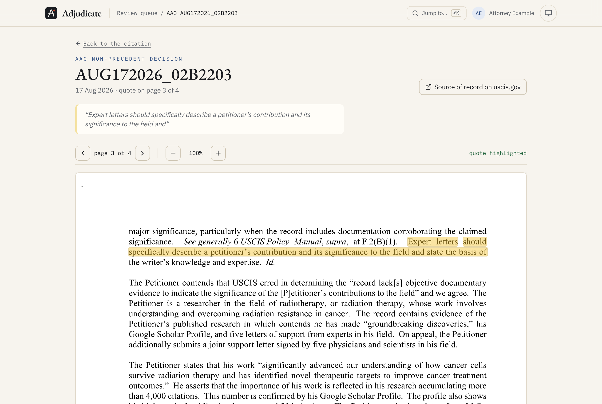

Three things it will not skip
An objection on every claimed criterion
For each criterion, and each half of the two-part ones, it argues the request for evidence an officer would write: invitations with no proof the review happened, a "leading role" letter that never describes the role, praise with no mechanism behind it. The attorney works through them one at a time, with a progress bar, filters and keyboard shortcuts.

Every claim shows its source, in one click
Citations may only point at passages that were actually retrieved, and the quote must appear verbatim. Hover one for a preview; click it and the full AAO passage slides in with the quoted words marked. One more click opens the decision PDF itself, on the right page, with the sentence highlighted. A prong it cannot ground is shown as "not reviewed", never quietly passed.


An attorney signs before anything leaves
Each objection is resolved or dismissed with a note, in an append-only log the database refuses to edit. The memo exports only after a sign-off that postdates the last change, and the server enforces it, not just the button.
a second tab with an old viewwrite refused